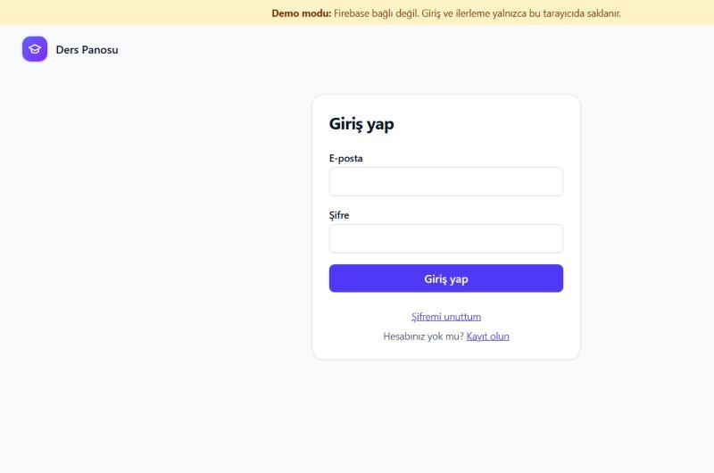
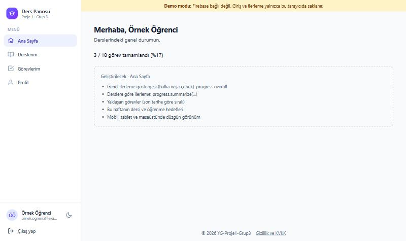
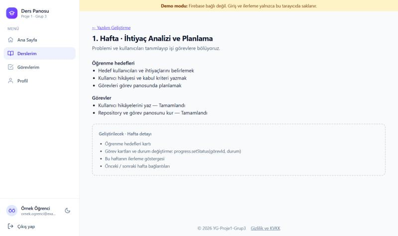
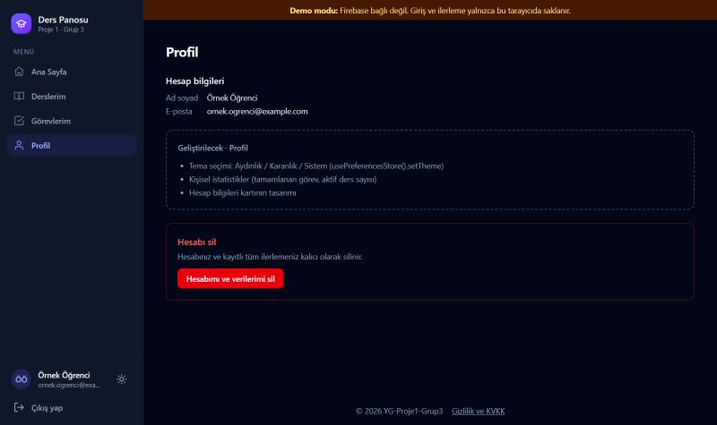
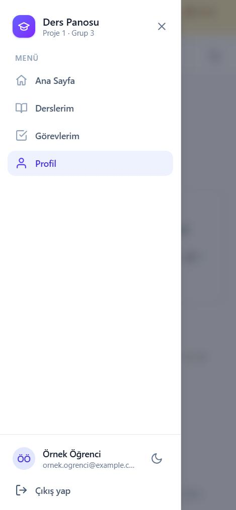

Proje Raporu
Grup 3 · YG-Proje1-Grup3| Ekip üyesi | Rol |
|---|---|
| Selin Özbay | Lider + Geliştirici |
| Cihan Bayram | Analist / Gereksinim Sorumlusu + Geliştirici |
| Tahir Taş | Test / Kalite Sorumlusu + Geliştirici |
| Ali Tekçe | Dokümantasyon / Sunum Sorumlusu + Geliştirici |
Etkileşimli Ders Deneyimi Panosu, öğrencilerin aldıkları dersleri, her dersin haftalık içeriğini ve öğrenme hedeflerini, haftalara bağlı görevlerini ve kendi ilerlemelerini tek bir yerden takip edebildiği, tarayıcıda çalışan bir web uygulamasıdır.
Uygulama Vue 3, TypeScript ve Tailwind CSS ile geliştirilmiştir. Kullanıcılar e-posta ve şifreyle hesap açar; görev durumları Firebase Cloud Firestore'da kullanıcıya özel olarak saklanır ve uygulama Firebase Hosting üzerinden yayınlanır. Firebase bilgileri olmadan da çalışabilmesi için bir demo modu vardır; bu sayede proje, temiz bir ortamda yalnızca README adımlarıyla kurulup denenebilir.
Projenin teknik odağı, ders kapsamında belirtildiği gibi web arayüzü, istemci tarafı etkileşim, responsive tasarım ve kullanıcı deneyimidir. Uygulama klasik bir "yapılacaklar listesi" olarak değil, ders akışını ve öğrenme ilerlemesini görsel olarak sunan bir ders panosu olarak tasarlanmıştır.
Bir öğrenci aynı dönemde birden fazla ders alır. Her dersin hangi haftasında olduğunu, o hafta neyi öğrenmesi gerektiğini ve hangi görevleri bitirdiğini çoğu zaman farklı kaynaklardan (ders sayfası, notlar, mesaj grupları) takip eder. Bu dağınıklık, öğrencinin genel durumunu görmesini ve önceliklerini belirlemesini zorlaştırır.
| Kullanıcı / paydaş | İhtiyaç ve beklenti |
|---|---|
| Öğrenci (birincil kullanıcı) | Ders haftalarını, görevleri ve ilerlemesini kolayca görmek; tamamlananları işaretlemek; içeriklere hızlı erişmek; telefonda da kullanabilmek. |
| Ders sorumlusu (senaryo paydaşı) | Ders akışının anlaşılır görünmesi; öğrencinin ne yapacağını kolayca takip edebilmesi. |
| No | Kullanıcı hikâyesi | Kabul kriterleri | Durum |
|---|---|---|---|
| KH-1 | Bir öğrenci olarak e-posta ve şifreyle hesap açıp giriş yapmak istiyorum; böylece ilerlemem bana özel kalsın. | Kayıt formunda ad soyad, e-posta, şifre (en az 6 karakter) ve KVKK onayı vardır. Hatalı bilgilerde Türkçe hata mesajı gösterilir. Giriş yapmayan kullanıcı uygulama sayfalarına giremez; girişten sonra gitmek istediği sayfaya döner. | Geliştiriliyor |
| KH-2 | Şifremi unuttuğumda yeni şifre belirleyebilmek istiyorum. | "Şifremi unuttum" sayfasından e-posta adresine sıfırlama bağlantısı gönderilir. Hesabın var olup olmadığı açığa çıkarılmaz. | Geliştiriliyor |
| KH-3 | Aldığım dersleri kartlar hâlinde görmek istiyorum. | Derslerim sayfasında her ders için kod, ad, öğretim elemanı, açıklama ve ilerleme çubuğu olan bir kart vardır. Karta tıklayınca dersin haftaları açılır. | Geliştiriliyor |
| KH-4 | Bir haftayı seçip o haftanın öğrenme hedeflerini ve görevlerini görmek istiyorum. | Hafta detayında açıklama, öğrenme hedefleri ve görevler listelenir; önceki/sonraki haftaya geçilebilir. | Geliştiriliyor |
| KH-5 | Bir görevi "tamamlandı" olarak işaretlemek istiyorum. | Görev durumu tek dokunuşla değişir; ilerleme göstergeleri anında güncellenir; sayfa yenilendiğinde durum korunur. | Geliştiriliyor |
| KH-6 | Yalnızca belirli durumdaki, dersteki veya haftadaki görevleri görmek istiyorum. | Görevlerim sayfasında durum, ders ve hafta filtreleri vardır; liste anında güncellenir; sonuç yoksa bilgilendirici mesaj gösterilir. | Geliştiriliyor |
| KH-7 | Bir anahtar sözcükle görev aramak istiyorum. | Arama kutusuna yazıldıkça görev başlığı ve açıklamasında eşleşenler listelenir; filtrelerle birlikte çalışır. | Geliştiriliyor |
| KH-8 | Genel ilerlememi tek bakışta görmek istiyorum. | Ana Sayfa'da tamamlanan / toplam görev oranını gösteren görsel bir gösterge ve ders bazında ilerleme vardır. | Geliştiriliyor |
| KH-9 | Uygulamayı karanlık veya aydınlık temada kullanmak istiyorum. | Tema düğmesiyle tema değişir; seçim hatırlanır; ilk açılışta aydınlık tema gelir. | Hazır |
| KH-10 | Uygulamayı telefonumda rahatça kullanmak istiyorum. | Mobilde menü soldan açılır; içerik yatay kaydırma gerektirmez; tüm kontroller dokunmaya uygun boyuttadır. | Hazır (çerçeve) |
| KH-11 | Kişisel verilerimin nasıl işlendiğini bilmek ve istersem silmek istiyorum. | Gizlilik ve KVKK sayfası herkese açıktır; Profil'den hesap ve tüm veriler kalıcı olarak silinebilir. | Geliştiriliyor |
| Senaryo | Adımlar |
|---|---|
| Haftalık akışı inceleme | Öğrenci giriş yapar → Derslerim'den bir dersi seçer → haftaları görür → bir haftayı açıp hedefleri ve görevleri inceler. |
| Görev ilerlemesi | Öğrenci bir görevi "Tamamlandı" yapar → Ana Sayfa'daki ve ders kartındaki ilerleme güncellenir → sayfa yenilendiğinde durum korunur. |
| Filtreleme ve arama | Öğrenci Görevlerim'de "Devam ediyor" filtresini seçer → arama kutusuna "SQL" yazar → liste anında daralır. |
| Gereksinim | Uygulamadaki karşılığı | Durum |
|---|---|---|
| Haftalık ders/öğrenme kartları | Derslerim → ders detayı (hafta kartları) → hafta detayı | Geliştiriliyor |
| Görev/mini etkinlik listesi; durum değiştirme | Görevlerim ve hafta detayı; progress.setStatus() hazır | Geliştiriliyor |
| Duruma veya haftaya göre filtre | Görevlerim: durum, ders ve hafta filtresi | Geliştiriliyor |
| Arama | Görevlerim: anlık arama kutusu | Geliştiriliyor |
| Genel ilerlemeyi gösteren görsel gösterge | Ana Sayfa; hesaplama progress.overall hazır | Geliştiriliyor |
| Responsive tasarım, kullanılabilir mobil görünüm | Masaüstünde sabit sol menü, mobilde açılır menü; Tailwind kırılımları | Hazır (çerçeve) |
| Karanlık/aydınlık tema | Tema düğmesi, tercih kaydı, yanıp sönmeyi önleyen ilk yükleme | Hazır |
| Yenilemede verinin korunması | Firestore (users/{uid}); demo modunda localStorage (demo modunda denendi, Firebase ile test edilecek) | Geliştiriliyor |
| Özellik | Gerekçe | Durum |
|---|---|---|
| E-posta/şifre ile kayıt, giriş, şifre sıfırlama | İlerlemenin kişiye özel olması ve farklı cihazlarda görünmesi | Geliştiriliyor |
| Birden fazla ders | Gerçek kullanımda öğrenci aynı anda birden fazla ders alır | Geliştiriliyor |
| Gizlilik ve KVKK aydınlatma metni | Kişisel veri (ad, e-posta) toplandığı için yasal yükümlülük | Hazır |
| Hesabı ve tüm verileri silme | KVKK m.11 kapsamındaki silme hakkı | Geliştiriliyor |
| Demo modu | Repo, Firebase anahtarı olmadan temiz ortamda çalışabilsin | Hazır |
| 404 sayfası | Yanlış adreste kullanıcıyı yönlendirmek | Hazır |
| Alan | Gereksinim ve nasıl karşılandığı |
|---|---|
| Kullanılabilirlik | Mobil, tablet ve masaüstünde kullanılabilir arayüz; tüm metinler Türkçe; hata mesajları anlaşılır. |
| Erişilebilirlik | Anlamlı etiketler, yeterli kontrast, klavyeyle kullanım, görünür odak (Bölüm 10). |
| Performans | Sayfalar ihtiyaç anında yüklenir (lazy loading); arayüz görev durumu değişince sunucuyu beklemeden güncellenir. |
| Güvenlik | Firestore kuralları ile her kullanıcı yalnızca kendi verisine erişir; gizli anahtarlar repoda tutulmaz (Bölüm 9). |
| Bakım kolaylığı | Bileşen tabanlı yapı, TypeScript tip denetimi, ESLint/Oxlint/Prettier ile ortak kod biçimi; veri erişimi servis katmanında toplanmıştır. |
| Taşınabilirlik | Proje README adımlarıyla temiz bir ortamda kurulabilir; Firebase olmadan demo modunda çalışır. |
| Teknoloji | Sürüm | Kullanım amacı ve seçilme gerekçesi |
|---|---|---|
| Vue 3 | 3.5 | Arayüzü yeniden kullanılabilir bileşenlere bölmek. Tek dosya bileşenlerinde HTML, CSS ve TypeScript bir arada durur; öğrenmesi görece kolaydır ve ders dokümanında önerilen çatılardandır. |
| TypeScript | 6.0 | Veri modelinin (ders, hafta, görev) tiplerini tanımlayarak hataları çalıştırmadan yakalamak; dört kişinin aynı veri yapısını tutarlı kullanmasını sağlamak. |
| Vite | 8.3 | Hızlı geliştirme sunucusu ve yayın için derleme. Vue'nun resmî proje şablonu ile gelir. |
| Vue Router | 5.4 | Sayfalar arası geçiş; giriş yapmamış kullanıcının uygulama sayfalarına girmesini engelleme; sekme başlıklarını ayarlama. |
| Pinia | 4.1 | Sayfaların ortak kullandığı durumu (oturum, ders kataloğu, görev durumları, tema) tek yerde tutmak. Bir sayfada görev tamamlanınca diğer sayfalardaki ilerleme kendiliğinden güncellenir. |
| Tailwind CSS | 4.3 | Responsive tasarım ve karanlık temayı hızlı ve tutarlı biçimde uygulamak; ayrı CSS dosyaları arasında dağılan stil kurallarını önlemek. |
| Firebase Authentication | 13.0 | E-posta/şifre ile güvenli kayıt, giriş ve şifre sıfırlama. Şifreler ekip tarafından görülemeyecek biçimde saklanır. |
| Cloud Firestore | 13.0 | Kullanıcıya özel görev durumlarını saklamak; farklı cihazlardan aynı ilerlemeye erişmek. Ayrı bir sunucu yazmadan kalıcı veri sağlar. |
| Firebase Hosting | — | Uygulamayı ücretsiz ve HTTPS ile yayınlamak; canlı demo bağlantısı sunmak. |
| ESLint, Oxlint, Prettier | — | Kod hatalarını erken yakalamak ve tüm ekibin aynı biçimde kod yazmasını sağlamak. |
| Vitest, Vue Test Utils | 5.0 | Store hesaplarının ve bileşenlerin birim testleri. |
| Playwright | 1.64 | Gerçek tarayıcıda uçtan uca (E2E) testler. |
| Firebase Emulator, rules-unit-testing | — | Firestore güvenlik kurallarını gerçek veritabanına dokunmadan test etmek. |
| GitHub Actions | — | Her push ve PR'da lint, tip kontrolü, derleme ve testleri otomatik çalıştırmak (CI). |
| Git, GitHub, GitHub Projects | — | Sürüm kontrolü, bireysel katkının kaydı, issue ve pano ile görev takibi (Bölüm 11). |
Uygulama, tarayıcıda çalışan tek sayfalık bir web uygulamasıdır (SPA). Kod, sorumluluklarına göre katmanlara ayrılmıştır; sayfalar veriye doğrudan değil, store'lar üzerinden erişir.
auth oturum · catalog ders kataloğu · progress görev durumları ve ilerleme · preferences temasrc/data/*.json (ders kataloğu) · Firebase Authentication · Cloud Firestore · localStorage (tema, demo)
Ders kuralları gereği API anahtarları repoya yazılmaz; Firebase ayarları git'e gönderilmeyen
.env.local dosyasında tutulur. Bu dosya yoksa uygulama otomatik olarak demo
moduna geçer: giriş ve görev durumları yalnızca tarayıcıda saklanır ve ekranın üstünde bir
uyarı gösterilir. Hangi modun kullanılacağı servis katmanında tek bir yerde belirlenir;
sayfalar ve store'lar iki modda da aynı çalışır. Canlı site her zaman Firebase'e bağlıdır.
src/ ├── assets/ Genel CSS (Tailwind, karanlık tema, odak stili) ├── components/ Tekrar kullanılan bileşenler (auth, common, layout, lessons, tasks) ├── composables/ Tekrar kullanılan mantık (useMediaQuery) ├── data/ Ders kataloğu: courses.json, weeks.json, tasks.json ├── firebase/ Firebase bağlantısı ve demo modu kararı ├── layouts/ Sayfa çerçeveleri (AppLayout, PublicLayout) ├── router/ Sayfa adresleri ve giriş kontrolü ├── services/ Veri okuma/yazma: auth/ ve userData/ (Firebase + demo) ├── stores/ Pinia store'ları: auth, catalog, progress, preferences ├── types/ TypeScript tipleri: Course, Week, Task, AppUser… ├── views/ Sayfalar ├── App.vue Kök bileşen ├── config.ts Ortak sabitler └── main.ts Uygulamanın başlangıç noktası
index.html, sayfa çizilmeden önce kayıtlı temayı uygular (beyaz ekran yanıp sönmez).main.ts Pinia'yı kurar ve oturum dinlemeyi başlatır.Veri iki bölümden oluşur: herkes için aynı olan ders kataloğu ve kullanıcıya özel görev durumları. İlerleme saklanmaz; her seferinde tamamlanan / toplam görev olarak hesaplanır.
| Varlık | Alanlar | Açıklama |
|---|---|---|
| Ders (Course) | id, code, title, instructor, description | Derslerim sayfasındaki her kart bir derstir. |
| Hafta (Week) | id, courseId, weekNo, title, description, learningGoals[] | Bir dersin haftalık içeriği ve öğrenme hedefleri. |
| Görev (Task) | id, courseId, weekNo, title, description, dueDate?, tags[] | Bir haftaya bağlı görev veya mini etkinlik. |
İlişkiler: bir dersin birden çok haftası, bir haftanın birden çok görevi vardır. Örnek katalogda 3 ders, 9 hafta ve 18 görev bulunur.
users/{uid}
taskStatuses: { "yg-w1-t1": "done", "wp-w2-t1": "in-progress", ... }
updatedAt: sunucu zamanı
| Görev durumu | Arayüzdeki adı |
|---|---|
todo | Yapılacak (durumu kaydedilmemiş her görev bu kabul edilir) |
in-progress | Devam ediyor |
done | Tamamlandı |
Her kullanıcı için tek belge tutulması, sorgu ve okuma sayısını en aza indirir. Durum
değişikliğinde yalnızca ilgili görev alanı güncellenir (merge).
| Anahtar | İçerik |
|---|---|
ders-panosu:theme | Tema tercihi (light / dark / system) |
ders-panosu:demo-user | Yalnızca demo modunda: oturum açan kullanıcı |
ders-panosu:user-data:{uid} | Yalnızca demo modunda: görev durumları |
| Sayfa | Adres | İçerik |
|---|---|---|
| Ana Sayfa | / | Genel ilerleme, yaklaşan görevler, bu haftanın dersi |
| Derslerim | /derslerim | Ders kartları |
| Ders detayı | /derslerim/:dersId | Dersin haftaları |
| Hafta detayı | /derslerim/:dersId/hafta/:no | Öğrenme hedefleri ve görevler |
| Görevlerim | /gorevlerim | Tüm görevler, filtre ve arama |
| Profil | /profil | Hesap bilgileri, tercihler, hesap silme |
| Giriş / Kayıt | /giris, /kayit, /sifremi-unuttum | Hesap işlemleri (giriş yapmadan erişilir) |
| Gizlilik ve KVKK | /gizlilik | Aydınlatma metni (herkese açık) |
Görüntüler 2. hafta sonundaki iskelet sürümünden, demo modunda örnek bir kullanıcıyla alınmıştır. Kesik çizgili "Geliştirilecek" kutuları, ilgili sayfada yapılacak işleri gösteren geçici alanlardır.




Mobil ekranlarda kenar çubuğu gizlenir ve üst bardaki menü düğmesiyle açılır (Şekil 5). Menü açıkken arkadaki sayfa kaymaz, klavye odağı menüye taşınır; kapatıldığında odak menü düğmesine döner.

| Önlem | Açıklama |
|---|---|
| Firestore güvenlik kuralları | Bir kullanıcı yalnızca kendi users/{uid} belgesini okuyup yazabilir; diğer tüm yollar kapalıdır. Giriş yapmadan yapılan okuma isteğinin reddedildiği (HTTP 403) test edilmiştir. |
| Gizli bilgilerin repoda olmaması | Firebase ayarları .env.local dosyasındadır ve .gitignore ile git dışında tutulur; repoda yalnızca boş şablon (.env.example) bulunur. |
| Şifre güvenliği | Şifreler Firebase Authentication tarafından geri çözülemeyecek biçimde saklanır; uygulama ve ekip şifreleri göremez. |
| Güvenli yönlendirme | Girişten sonra yalnızca uygulama içi adreslere dönülür; dış bir siteye yönlendirme yapılamaz. |
| Hesap bilgisi sızdırmama | Şifre sıfırlamada, e-postanın kayıtlı olup olmadığı kullanıcıya söylenmez. |
| HTTPS | Canlı site Firebase Hosting üzerinden yalnızca HTTPS ile sunulur. |
/gizlilik sayfasında herkese açıktır; veri sorumlusu, işlenen veriler, amaçlar, hukuki sebep, saklama yeri ve süresi ile 11. maddedeki haklar açıklanır.eur3); metinde verilerin yurt dışındaki sunucularda tutulduğu belirtilmiştir.| İlke | Uygulamadaki karşılığı |
|---|---|
| Anlamlı etiketler | Her form alanının bağlı bir etiketi vardır; ikon düğmelerinde ekran okuyucu için açıklama (aria-label) bulunur; sayfa dili Türkçe olarak tanımlıdır. |
| Klavyeyle kullanım | Tüm kontroller Tab ile erişilebilir; odaklanan öğe belirgin bir çerçeveyle gösterilir; "İçeriğe geç" bağlantısı menüyü atlatır; mobil menü Esc ile kapanır. |
| Durum bildirimi | Seçili menü öğesi aria-current ile, hata mesajları role="alert" ile duyurulur. |
| Kontrast | Metin ve arka plan renkleri aydınlık ve karanlık temada okunaklı olacak şekilde seçilmiştir. |
| Responsive | 768 px altında mobil düzen (açılır menü), üstünde masaüstü düzen (sabit kenar çubuğu); içerik yatay kaydırma gerektirmez. |
| Üye | Rol | Temel sorumluluklar |
|---|---|---|
| Selin Özbay | Lider + Geliştirici | Koordinasyon, görev paylaşımı, GitHub ve görev panosu düzeni, teslim kontrolü |
| Cihan Bayram | Analist + Geliştirici | İhtiyaç analizi, kullanıcı hikâyeleri, kabul kriterleri, kapsam yönetimi |
| Tahir Taş | Test / Kalite + Geliştirici | Test senaryoları, hata takibi, kalite kontrol |
| Ali Tekçe | Dokümantasyon / Sunum + Geliştirici | README, proje raporu, kullanıcı dokümanı, sunum ve teslim paketi |
Tüm ekip üyeleri aynı zamanda geliştiricidir. Geliştirme işi, her biri bir GitHub issue'su olan iş paketlerine bölünmüştür:
| İş paketi | Kapsam |
|---|---|
| Proje iskeleti ve ortak çerçeve | Kurulum, yönlendirme, kenar çubuğu, tema, KVKK metni, canlı yayın — Hazır Kayıt, giriş, şifre sıfırlama, hesap silme — Geliştiriliyor |
| Ana Sayfa | Genel ilerleme göstergesi, derslere göre ilerleme, yaklaşan görevler |
| Derslerim ve hafta detayı | Ders kartları, hafta kartları, öğrenme hedefleri, haftalar arası geçiş |
| Görevlerim | Görev kartları, durum değiştirme, filtre, arama, boş durum mesajı |
| Profil ve kalite | Tema seçimi, kişisel istatistikler, mobil görünüm ve erişilebilirlik kontrolü |
Görev takibi başlangıçta Jira'da (proje anahtarı KAN) yapılmış, 2. haftada görev, dal, commit ve PR'ın aynı yerde görünmesi için GitHub Projects'e taşınmıştır. Eski Jira görevleri GitHub issue'larına aktarılmıştır.
#12 gibi) ve bir ekip üyesine atanır. Panodaki sütunlar: Yapılacaklar → Yapılıyor → İnceleme → Test → Yapıldı. Her issue'da öncelik ve kabul kriterleri bulunur; büyük işler alt görevlere bölünür.main dalından açılan feature/12-kisa-aciklama biçimindeki dallarda yapılır. PR açıklamasındaki Closes #12 satırı PR'ı issue'ya bağlar; en az bir ekip arkadaşı incelemeden ve otomatik kontroller geçmeden PR birleştirilmez.feat: görevlere durum filtresi ekle (#12) Öğrenci yalnızca devam eden görevlerini görebilsin diye. - Görevlerim sayfasına Yapılacak / Devam ediyor / Tamamlandı filtresi eklendi - Sonuç yoksa "Bu durumda görev yok" mesajı gösteriliyor
Türler: feat (özellik), fix (hata), style (görünüm), refactor, docs, test, chore.
| Hafta | Plan | Gerçekleşen | Durum |
|---|---|---|---|
| 1 | İhtiyaç analizi, kullanıcı hikâyeleri, repository ve görev planı | Ders dokümanları incelendi; menüler, teknolojiler ve kapsam belirlendi; GitHub reposu ve Jira panosu açıldı. | Tamamlandı |
| 2 | Arayüz/teknik tasarım; temel yapı ve ana işlevler | Proje iskeleti, veri modeli, kenar çubuğu, tema, KVKK sayfası, Firestore kuralları ve canlı yayın tamamlandı; README yazıldı. Görev takibi GitHub Projects'e taşındı; birim, E2E ve Firestore kural testleri ile GitHub Actions kuruldu. Giriş sisteminin kodu yazıldı, gerçek Firebase hesabıyla testi 3. haftaya kaldı. | Tamamlandı |
| 3 | Ana işlevlerin tamamlanması, entegrasyon, test, hata düzeltme | Sayfa içerikleri (ders kartları, görev listesi, filtre, arama, ilerleme göstergesi) geliştirilecek; test senaryoları çalıştırılacak. | Devam ediyor |
| 4 | Kalite kontrol, dokümantasyon, demo, sunum ve teslim | Kullanıcı dokümanı, raporun son hâli, sunum ve demo senaryolarının provası. | Bekliyor |
| Test türü | Kapsam | Komut |
|---|---|---|
| Statik denetim | ESLint + Oxlint ile kod hataları, TypeScript tip kontrolü, yayın derlemesi | npm run lint, npm run type-check, npm run build |
| Birim ve bileşen testleri (Vitest) | Ders kataloğu ve ilerleme store'larının hesapları, AppIcon bileşeni. Testler her zaman demo modunda çalışır, gerçek Firebase'e bağlanmaz. Rapor tarihinde 3 dosyada 10 testin tamamı geçmektedir. | npm test |
| Uçtan uca testler (Playwright) | Giriş yapmayanın giriş sayfasına yönlenmesi, demo modunda giriş ve menüden sayfa geçişleri; gerçek tarayıcıda | npm run test:e2e |
| Firestore kural testleri | Giriş yapmayanın hiçbir belgeye, giriş yapanın yalnızca kendi belgesine erişebildiği; Firestore emülatöründe | npm run test:rules |
| Manuel senaryo testleri | Aşağıdaki senaryolar; masaüstü (1280 px) ve mobil (375 px), aydınlık ve karanlık tema | — |
Sürekli entegrasyon (CI): main dalına yapılan her push'ta ve açılan her PR'da
GitHub Actions dört kontrol çalıştırır: lint + tip kontrolü + derleme, birim testleri, E2E
testleri ve kural testleri. Kontrollerden biri başarısızsa PR birleştirilmeden önce düzeltilir.
| No | Senaryo | Beklenen sonuç | Sonuç |
|---|---|---|---|
| T-1 | Demo modunda kayıt formu doldurulup KVKK onayıyla kayıt olunur. | Kullanıcı Ana Sayfa'ya yönlendirilir; adı görünür. | Geçti |
| T-2 | Giriş yapmadan /derslerim adresine gidilir. | Giriş sayfasına yönlendirilir; girişten sonra Derslerim açılır. | Geçti |
| T-3 | Bir görev "Tamamlandı" yapılıp sayfa yenilenir. | Durum ve ilerleme (ör. 1/18, %6) korunur. | Geçti |
| T-4 | Tema düğmesine basılıp sayfa yenilenir. | Seçilen tema korunur; kayıtlı tercih yoksa aydınlık tema açılır. | Geçti |
| T-5 | Mobil genişlikte menü açılır; Esc'e basılır; menüden bir sayfa seçilir. | Menü açılır/kapanır; odak doğru yere geçer; sayfa değişince menü kapanır. | Geçti |
| T-6 | Var olmayan bir adres açılır. | 404 sayfası gösterilir. | Geçti |
| T-7 | Giriş yapmadan Firestore'daki bir kullanıcı belgesi okunmaya çalışılır. | İstek reddedilir (PERMISSION_DENIED, HTTP 403). | Geçti |
| T-8 | Canlı sitede doğrudan /gizlilik adresi açılır. | Sayfa açılır; demo modu uyarısı görünmez; konsolda hata yoktur. | Geçti |
| T-9 | Canlı sitede gerçek e-postayla kayıt, çıkış, tekrar giriş ve şifre sıfırlama. | Tüm adımlar hatasız çalışır; sıfırlama e-postası Türkçe gelir. | Bekliyor |
| T-10 | Profil'den hesap silinir. | Kullanıcı ve Firestore verisi silinir; giriş sayfasına dönülür. | Bekliyor |
| T-11 | Görevler durum, ders ve hafta filtresiyle süzülür; arama yapılır. | Liste anında güncellenir; sonuç yoksa mesaj gösterilir. | Bekliyor |
| T-12 | Ders ve hafta kartlarındaki ilerleme göstergeleri kontrol edilir. | Görev durumu değişince tüm göstergeler aynı anda güncellenir. | Bekliyor |
Gereksinimler: Node.js 22.18 veya üstü (önerilen 24 LTS), npm, Git. Yayınlamak için Firebase CLI.
git clone https://github.com/selinozbay/YG-Proje1-Grup3.git cd YG-Proje1-Grup3 npm install npm run dev # http://localhost:5173
.env.example dosyası .env.local adıyla kopyalanıp ekipten alınan değerlerle doldurulur. Bu adım atlanırsa uygulama demo modunda açılır.npm run dev:demo uygulamayı her zaman demo modunda başlatır.npm run lint ve npm run type-check kodu denetler; npm test, npm run test:e2e ve npm run test:rules testleri çalıştırır; npm run build yayın dosyalarını üretir.npm run deploy uygulamayı derleyip Firebase Hosting'e yayınlar ve Firestore kurallarını yükler. Canlı adres: https://ders-ogrenci-bilgi-ekip.web.appAyrıntılı kurulum, komutlar ve dosya dosya açıklamalar repodaki README.md dosyasındadır.
| Eksik | Plan |
|---|---|
| Ana Sayfa, Derslerim, Görevlerim ve Profil sayfalarının içerik bileşenleri | 3. haftada ilgili iş paketleri (Bölüm 11.1) tamamlanacak. |
| Kayıt, giriş, şifre sıfırlama ve hesap silme akışlarının gerçek Firebase hesabıyla denenmesi (T-9, T-10) | Test sorumlusu tarafından 3. haftada yapılacak; sorunsuz çalışırsa "Hazır" olarak işaretlenecek. |
| Gizlilik sayfasındaki iletişim e-postası | Ekip iletişim adresi belirlenince eklenecek. |
| Kullanıcı dokümanı ve sunum | Sayfalar tamamlandıktan sonra ekran görüntüleriyle hazırlanacak. |
| Demo modunda şifre kontrolü yok | Bilinçli tercih: demo modu yalnızca denemek içindir; gerçek kullanım Firebase modundadır. |
Ders kuralları gereği yapay zekâ çıktıları anlaşılmadan projeye eklenmemelidir. Bu projede yapay zekâ destekli bir kodlama asistanı (Claude Code) şu işlerde kullanılmıştır:
Üretilen kod, ekip tarafından okunmuş ve açıklanabilir olması için önemli yerlerine Türkçe
açıklamalar eklenmiştir. Yapay zekâ desteğiyle yapılan commitlerde bu durum commit mesajında
(Co-Authored-By) belirtilmiştir. Sayfaların içerik bileşenleri ekip üyeleri
tarafından geliştirilmektedir.
| Rubrik kriteri (puan) | Projedeki karşılığı | Bölüm |
|---|---|---|
| Temel işlevlerin çalışması (15) | Ders/hafta kartları, görev durumu, filtre, arama, ilerleme göstergesi | 4.1 |
| Web arayüzü ve kullanıcı etkileşimi (12) | Kenar çubuğu düzeni, anlık güncellenen ilerleme, tema, formlar ve hata mesajları | 8 |
| Responsive tasarım ve kullanılabilirlik (8) | Masaüstü/mobil düzen, erişilebilirlik ilkeleri | 8.2, 10 |
| İhtiyaç analizi / kullanıcı senaryoları (7) | Hedef kullanıcılar, 11 kullanıcı hikâyesi ve kabul kriterleri, senaryolar | 3 |
| Kod ve repository düzeni (6) | Katmanlı mimari, TypeScript, lint/format kuralları, otomatik testler ve CI, README, PR şablonu, GitHub Projects, commit kuralları | 6, 11.2 |
| Rapor ve kullanıcı dokümanı (7) | Bu rapor; kullanıcı dokümanı 4. haftada | — |
| Sunum ve demo (5) | Canlı demo: ders-ogrenci-bilgi-ekip.web.app; senaryolar Bölüm 3.3 | 3.3, 13 |